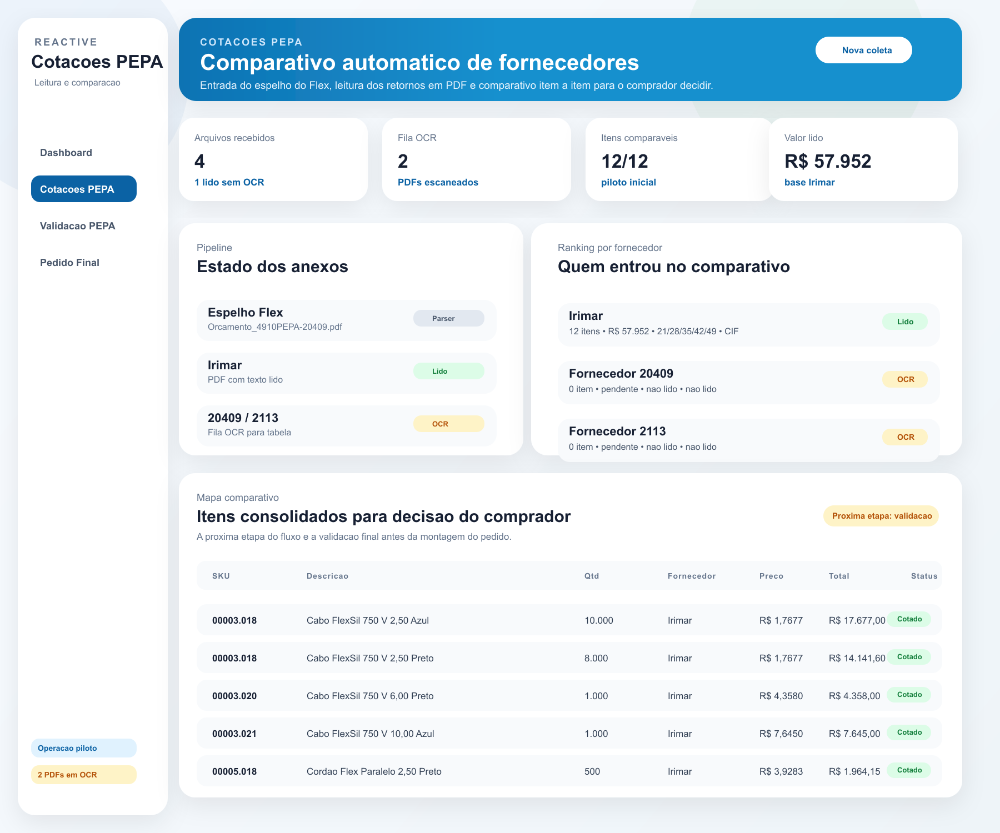
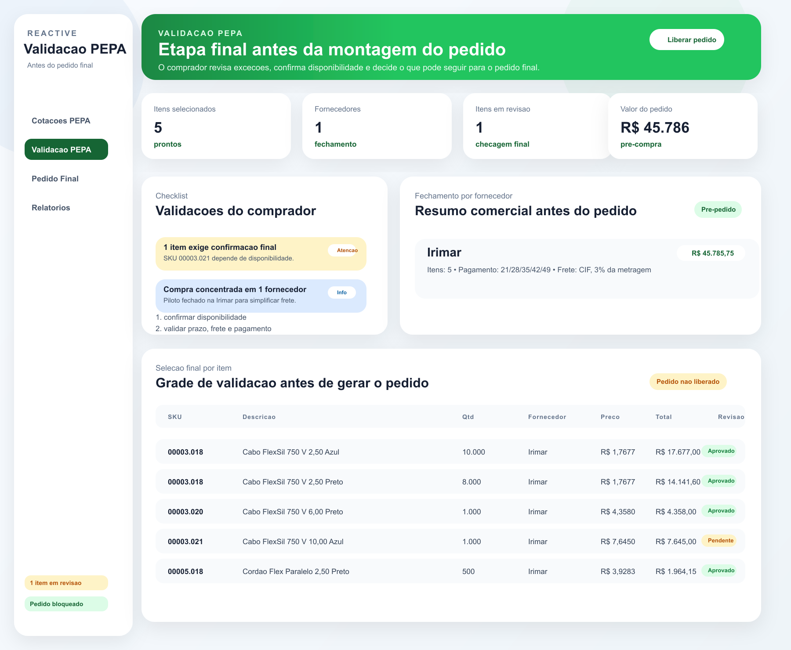
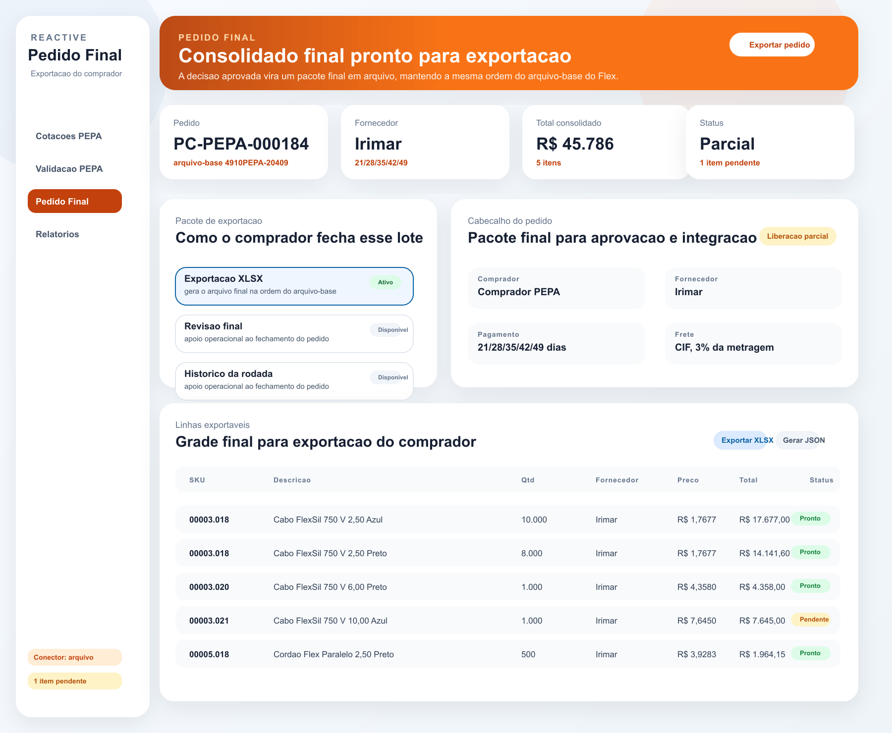

Entrada
- Espelho gerado no ERP Flex
- Respostas dos fornecedores em PDF
- Arquivos recebidos por WhatsApp
PEPA · Automacao de Cotacoes
A proposta elimina a analise manual de PDFs recebidos por WhatsApp, compara as cotacoes contra o espelho emitido no Flex, permite validacao operacional do comprador e devolve o resultado final ao ERP.
Hoje o comprador emite o espelho no Flex, envia aos fornecedores, recebe respostas em PDF e faz a comparacao de forma manual. A automacao proposta organiza esse fluxo em uma superficie operacional unica e prepara o retorno estruturado ao ERP.
O fluxo operacional foi estruturado em 3 telas: comparativo, validacao e consolidado final pronto para integração com o Flex.
Etapa 1
Entrada dos anexos, fila OCR, ranking por fornecedor e melhor preco por item.

Etapa 2
O comprador trata excecoes, confirma disponibilidade e escolhe o que pode seguir.

Etapa 3
Pacote consolidado pronto para voltar ao ERP por API, arquivo estruturado ou RPA.

A arquitetura foi preparada para que a logica principal da automacao fique separada do conector do ERP. Isso evita retrabalho enquanto a Flex confirma o modo de integração disponível.
Melhor cenário. O sistema lê o espelho, grava a decisão do comprador e devolve o consolidado ao ERP.
Plano intermediário. O Flex exporta o espelho e recebe de volta um Excel ou CSV com a decisão final.
Plano de contingência. A automação preenche a interface do Flex quando não houver API nem importação.